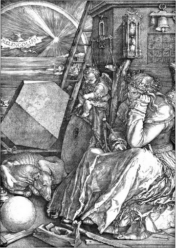
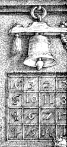
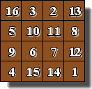
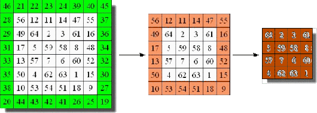
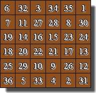

Carrés magiques : galerie de portraits
Albrecht Dürer est né le 21 mai 1471. Il est le troisième fils
des dix-huit enfants dAlbrecht Dürer lAncien, un orfèvre dorigine
hongroise. Ses apprentissages le menèrent à Colmar, Nuremberg et Venise notamment. Durant son expérience italienne, il fut influencé par les maître'époque et s'intéressa aux travaux de Vitruve et de Léonard de Vinci.
S'il est connu pour ses peintures et gravures, on sait moins qu'il s'intéressa aux mathématiques et carrés magiques, tel celui qu'il glissa dans sa célèbre gravure "Melencolia Si".
Pour en savoir plus sur Dürer...



Il est à noter que Dürer a poussé le raffinement jusqu'à composer un carré magique lui permettant de dater sa gravure : 1514. Il a dû choisir parmi les 880 possibles (tous différents par rotation ou symétrie).
Vous voyez un carré magique d'ordre 4, car c'en est bien un : les sommes sont bien de 34, quelle que soit la ligne, colonne ou diagonale.
Son carré a beaucoup de propriétés de symétrir, mails n'est ni diabloique, et que partiellement enchanté
Il est inutile de le présenter : philosophe, physicien, mathématicien, célèbre inventeur de la première machine à calculer...
Ce que l'on sait moins, c'est qu'il est l'auteur d'un traité sur la construction des "carrés magiques à enceintes" : "Traité des nombres magiquement magiques", qu'il a adressé en 1654 à l'Académie des Sciences
Un tel carré magique le reste au fur et à mesure lui supprime les deux lignes et colonnes qui permettent de trouver un autre carré, qui reste magique.
Exemple :

Envoyé extraordinaire à la cour du Roi de Siam, mathématicien auteur notamment d'un traité : "De la Résolution des équations, ou de l'Extraction de leurs racines", mais aussi de "Du Royaume de Siam par Monsieur de La Loubère, envoyé extraordinaire du Roy auprès du Roy de Siam en 1687 et 1688.
C'est en annexe de cet ouvrage qu'il décrivit dans un long appendice de 60 pages, une méthode de construction de carrés magiques de 5 x 5 et que, le premier en France, il dénommait ainsi.
Traduit en anglais sous le titre A New Historical Relation of the Kingdom of Siam (1693) et rédité en 1969. C'est de cette version qu'est extraite l'image ci-contre.
Plus d'informations sur Simon de La Loubère ici.
Règles de remplissage (exemple) :
-
On place les nombres naturels dans lordre en commençant par le 1 au milieu de la ligne inférieure
On place la suite diagonalement en montant vers la droite.
Lorsqu'on sort du carré sur un bord, on fait glisser ce nombre
- Lorsqu'on arrive sur une case déjà occupée, ou que l'on sort du carré en diagonale, on place le nombre au dessus de la dernière case remplie et on continue.
- vers la première case (ou dernière case) de lautre côté.
- vers la première case (ou dernière case) de la ligne supérieure (ou inférieure).
A propos de Louis XIV, notons au passage, qu'un astrologue était présent à sa naissance et qu'en 1968, Mademoiselle Josèphe Jacquiot, Conservateur au département des médailles et antiquités de la Bibliothèque Nationale, découvrit que celui-ci possédait une médaille (offerte à sa naissance) sur une face de laquelle était gravé un carré magique d'ordre 6
Pas n'importe lequel, celui connu sous le nom de carré du Soleil, le carré du soleil pour le "Roi-Soleil" :
Ce carré-ci est bien particulier, il n'est pas appelé carré du Soleil par hasard : les paires de nombres valant 37 rayonnent autour du centre théorique du carré !
D'ailleurs, il sera montré plus loin, une "descendance" de ces carrés, construits sur le même modèle, ce qui selon un auteur d'ouvrages sur le sujet n'aurait jamais été fait...
Quelqu'étonnante que paraisse cette affirmation, je ne connais effectivement pas d'ouvrages traitant de la méthode de construction ce type précis de carrés dont la dimension est le double d'un nombre impair, soit 2(2k+1), sur le modèle du carré du soleil...

Euler a notamment consacré deux mémoires à l'étude des carrés magiques : le 795, intitulé "De quadratis magicis", où il décrit des règles simples de constructions à partir de lettres grecques et latines (carrés gréco-latins) et le 530 intitulé "Recherches sur une nouvelle espèce de carrés magiques" dont le point de départ est le fameux problème des 36 officiers...
Peut-on placer dans un carré de dimension 6, 36 officiers de six grades différents et appartenant à 6 régiments différents de telle façon que sur chaque ligne et sur chaque colonne figurent six officiers de grades différents et de régiments différents ?Telle était la problématique...Euler arriva à la conclusion que c'était impossible et crut pouvoir affirmer que c'était également impossible pour tout ordre du type 2(2k+1) avec n >1 Cette affirmation fit autorité jusqu'en 1959 ou un tel carré (gréco-latin) d'ordre 10 fut construit et démonstration faite que c'était possible pour tous les ordres de ce type supérieurs à 6.
Signalons encore qu'Euler décrivit aussi, dans son mémoire n° 795, une méthode de remplissage des carrés magiques à partir d'un simple déplacement : celui du Cavalier du jeu d'Echecs. Des variantes de cette méthode avaient également été décrites par De La Loubère et Bachet de Méziriac.
Fils dun contrôleur des Contributions directes, après avoir fait lÉcole Polytechnique, devient Capitaine de larmée de Terre pour devenir Général de Brigade en 1921, après la guerre de 1914-1918 où il s'illustra en combattant vaillamment.
Alors, retraité de l'armée, en 1933, notre Général publia un ouvrage "Les Carrés Magiques au Degré n" dans lesquel il publia le premier carré magique d'ordre 64 (4096 nombres !) entièrement tracé à la main. Le plus petit carré trimagique connu jusqu'alors (depuis 1905) était d'ordre 128. Il semblerait, curieusement que plus la dimension est petite, plus difficile à construire est le carré : probablement parce que le nombre de choix se réduit en conséquence
Cazalas pensait qu'il était impossible d'en construire de plus petits : de fait, ce n'est qu'en 2002 qu'on réussit à construire un carré magique d'ordre 12 et que fut apportée une preuve rigoureuse de l'inexistence de carrés plus petits.
Dans la scène du 1er Faust de Goethe, "Cuisine de sorcière", Méphistophélès présente à Faust une "sorcière" qui lui lit notamment un poème, une incantation que les spécialistes de Goethe ensaient dénuée de toute signification. Eutope Cazalas a réussi à montrer que ledit poème expliquait "simplement" comment faire du carré "normal" composé des neuf premiers nombres entiers (autres que 0), un carré magique d'ordre 3, dont la constante est 15.